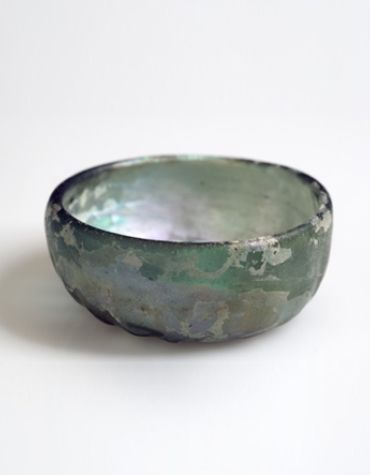
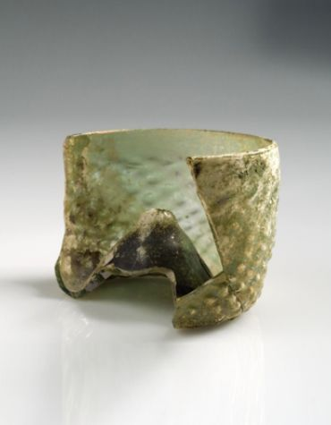
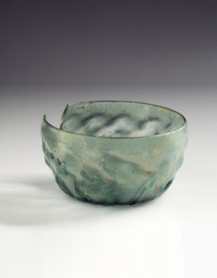

-

Maigeleinglass (B 6388). Glasset er helt, det er ca. 1,5 cm høyt. Det har glatte sider uten dekor. Det er funnet i Vinkjelleren på Bryggen.
-

Maigeleinglass (BRM 0/26493). Fragmentet er ca. 5,5 cm høyt. Glasset har optisk dekor. Det er funnet i den nordlige delen av Bryggen.
-

Maigeleinglass (B 6583). Dette glasset er bare ca. 1,5 cm høyt, det har optisk dekor og er funnet i Vinkjelleren på Bryggen.
-

Maigeleinglass (B 6583). Fragmentet er ca. 4,0 cm høyt. Glasset har optisk dekor. Det er funnet i Vinkjelleren på Bryggen.